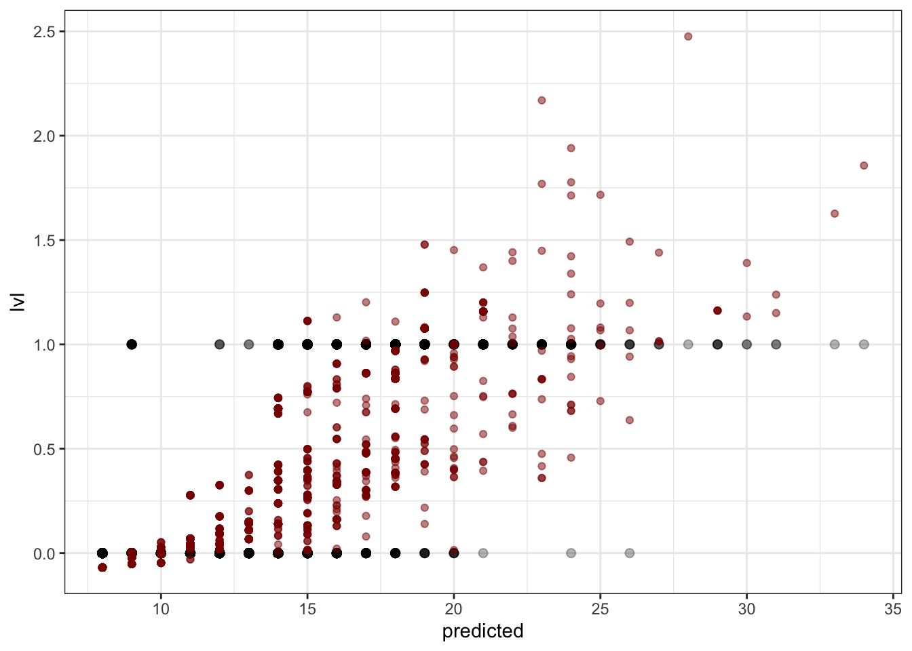
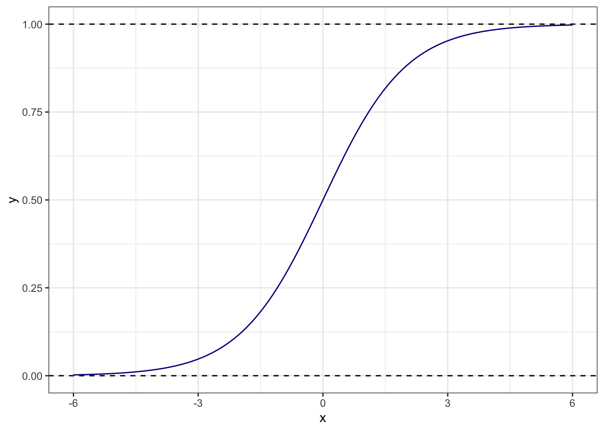

17 Обобщенные линейные модели. Логистическая регрессия
17.1 Ограничения общих линейных моделей
Модели, которые мы изучали на предыдущих занятиях носят название общих линейных моделей (general linear models). Они достаточно просты и удобны в большинстве случаев, однако имеют ряд важных ограничений.
Вспомним, как выглядит уравнение такой модели:
\[y = \beta_0 + \beta_1 x_1 + \dots + \beta_p x_p + \varepsilon\]
Предикторы в такой модели могут быть как дискретными, так и непрерывными.
Важнейшим допущением и требованием этой модели является распределение ошибки:
\[\varepsilon \thicksim \mathcal{N}(0, \, \sigma)\]
Поскольку ошибка модели должна быть распределена нормально, а моделируется среднее значение, то можно сформулировать более общее допущение / требование:
\[y_i \thicksim \mathcal{N}(\mu_i, \, \sigma)\]
Таким образом, общие линейные модели позволяют моделировать зависимости только для нормальнораспределенных величин. Если же наша целевая переменная подчиняется другому распределению, эти модели не годятся.
Однако нам на помощь приходят обобщенные линейные модели (generalized linear models), которые позволяют моделировать зависимости величин, подчиняющихся не только нормальному распределению, но и многим другим.
Мы познакомимся с общей логикой построения GLM, подробно рассмотрев один из вариантов таких моделей, а именно биномиальную регрессию.
17.2 Бинарные переменные
Эти переменные достаточно широко распространены как повседневности, так и в науке. Блюдо вкусное или невкусное, команда выиграла или проиграла, пациент в результате медицинских манипуляций выжил или умер, в ходе эксперимента была выбрана какая-то опция или нет, сдал студент экзамен или не сдал — и т.д.
Эти события могут быть связаны с раздичными предикторами, и такую взаимосвязь можно описать с помощью регрессионных моделей.
17.3 Данные
Снова начнем с данных — на этот раз про менеджеров. Это часть данных большого датасета, собранного в рамках одного из HR-исследований.
## # A tibble: 6 × 10
## id lvl quali…¹ auton…² subdi…³ compa…⁴ direc…⁵ func_…⁶ incom…⁷ error…⁸
## <chr> <chr> <dbl> <dbl> <dbl> <dbl> <dbl> <dbl> <dbl> <dbl>
## 1 таб_154… Сотр… 5 2 1 1 1 1 1 1
## 2 таб_139… Сотр… 4 2 1 1 1 1 1 2
## 3 таб_407… Сотр… 2 2 1 1 1 1 1 1
## 4 таб_417… Сотр… 4 3 1 1 1 1 1 1
## 5 таб_633… Мене… 5 3 2 3 2 1 3 5
## 6 таб_162… Сотр… 2 2 1 1 1 1 2 2
## # … with abbreviated variable names ¹qualification, ²autonomy,
## # ³subdiv_regulations, ⁴company_regulations, ⁵direct_juniors, ⁶func_juniors,
## # ⁷income_influence, ⁸error_costУ нас есть следуюшие переменные:
id— табельный номер сотрудникаlvl— уровень (СотрудникилиМенеджер)qualification— профессиональная квалификацияautonomy— автономия в принятии решенийsubdiv_regulations— участие в формировании регламентов подразделенияcompany_regulations— участие в формировании регламентов Компанииdirect_juniors— количество прямых подчинённыхfunc_juniors— количество функциональных подчинённыхincome_influence— влияние на доход Компанииerror_cost— стоимость ошибки
17.4 Задача построения линейной модели
В наших данных есть бинарная переменная lvl — она содержит две градации: Сотрудник и Менеджер. Вопрос, на который нам необходимо ответить: по каким параметрам различаются менеджеры и сотрудники?
##
## Менеджер Сотрудник
## 810 2400Прежде всего надо вспомнить, что мы работаем с математической моделью, которой необходимы числа, поэтому придётся перекодировать нашу целевую переменную. Пусть 1 обозначает менеджеров, а 0 — сотрудников.
Теперь мы можем построить модель, описывающую связь lvl с имеющимися предикторами.
Попробуем обычную линейную регрессию.
##
## Call:
## lm(formula = lvl ~ ., data = managers)
##
## Residuals:
## Min 1Q Median 3Q Max
## -1.47532 -0.07671 -0.04250 0.06891 1.02042
##
## Coefficients:
## Estimate Std. Error t value Pr(>|t|)
## (Intercept) -0.869056 0.015520 -55.994 < 2e-16 ***
## qualification 0.048487 0.004420 10.969 < 2e-16 ***
## autonomy 0.016780 0.008309 2.019 0.043527 *
## subdiv_regulations 0.281009 0.014017 20.048 < 2e-16 ***
## company_regulations -0.068712 0.011403 -6.026 1.88e-09 ***
## direct_juniors 0.369140 0.012549 29.416 < 2e-16 ***
## func_juniors 0.107304 0.008069 13.298 < 2e-16 ***
## income_influence 0.072478 0.007434 9.749 < 2e-16 ***
## error_cost -0.026336 0.007985 -3.298 0.000984 ***
## ---
## Signif. codes: 0 '***' 0.001 '**' 0.01 '*' 0.05 '.' 0.1 ' ' 1
##
## Residual standard error: 0.2235 on 3201 degrees of freedom
## Multiple R-squared: 0.7361, Adjusted R-squared: 0.7354
## F-statistic: 1116 on 8 and 3201 DF, p-value: < 2.2e-16Модель построилась, всё суперклассно.
Попробуем визуализировать, что получилось.

Но получается что-то странное…
Во-первых, непонятно, какая величина отложена на оси \(y\). Во-вторых, предсказания модели выходят за границы допустимых значений (модель предсказывает отрицательные и большие единицы значения). Поэтому простая линейная модель нам не подходит. Надо искать что-то еще.
17.5 Переход от дискретной величины к непрерывной
17.5.1 Логистическая кривая
Собственно бинарные переменные неудобны для работы, поэтому надо найти способ превратить такую дискретную бинарную шкалу в «безграничную» и непрерывную. При моделировании нулей и единиц переходят к моделированию вероятности получения единиц.
Сама зависимая переменная в зависимости от предиктора распределена примерно так:

Введем новые обозначения:
- \(p_i\) — вероятность события \(y_i = 1\) при данных значениях предиктора,
- \(1 - p_i\) — вероятность альтернативного события \(y_i = 0\).
Получается непрерывная величина \(0 \leq p_i \leq 1\).

И вроде бы как ее можно уже моделировать. Но нужно помнить, что вероятность изменяется в пределах от нуля до единицы, а прямая ничем не ограничена. Поэтому прямая — не лучший вариант.
Такая закономерность моделируется логистической кривой.

Она лежит как раз в пределах от 0 до 1. Наша логистическая кривая задается уравнением
\[ p_i = \frac{e^{\beta_0 + \beta_1 x_i}}{1 + e^{\beta_0 + \beta_1 x_i}} \]
Логистическую кривую мы больше никогда не увидим — печаль :( — но она используется внутри функций, которыми мы строим модель.
17.5.2 Шансы и логиты
Теперь нам надо побороться с ограниченностью логистической кривой. Для этого можно перейти от вероятностей к шансам.
Шанс (отношение шансов, odds, odds ratio) — это отношение вероятности успеха к вероятности неудачи. Их величина варьируется от \(0\) до \(+\infty\).
Уже лучше, но все еще не самый лучший вариант… Последний шаг, необходимый нам, чтобы все было хорошо, юзануть логарифм, который преобразуем шансы в логиты.
\[ \mathrm{logit}(p) = \ln\left(\frac{p_i}{1-p_i}\right) \]
Значения логитов — трансформированные оценки вероятностей события. Они варьируют от \(-\infty\) до \(+\infty\), симметричны относительно нуля, и их удобно брать в качестве зависимой переменной для построения модели. Кроме того, logit-преобразование еще и линеаризует логистическую кривую, то есть превращает её в прямую.
И далет это примерно так
Модель биномиальной регрессии с одним предиктором имеет следующий вид:
\[ p = \frac{e^{\beta_0 + \beta_1 x}}{1 + e^{\beta_0 + \beta_1 x}}, \]
где \(p\) — вероятность «единицы», \(\beta_0\) и \(\beta_1\) — коэффициенты модели, \(x\) — значение предиктора.
Обозначим \(\beta_0 + \beta_1 x = t\).
Необходимо доказать, что logit-преобразование
\[ \text{logit}(p) = \ln \left( \frac{p}{1 - p} \right) \]
сделает логистическую функцию линейной — обычной прямое. Иначе говоря, необходимо доказать, что
\[ \ln \left( \frac{p}{1 - p} \right) = t \]
Распишем формулу:
\[ \ln \left( \frac{p}{1 - p} \right) = \ln \left( \frac{\dfrac{e^t}{1 + e^t}}{1 - \dfrac{e^t}{1 + e^t}} \right) = \]
Далее пользуемся свойствами логарифма:
\[ = \ln \left( \frac{e^t}{1 + e^t} \right) - \ln \left( 1 - \frac{e^t}{1 + e^t} \right) = \\ \ln \left( \frac{e^t}{1 + e^t} \right) - \ln \left( \frac{1 + e^t - e^t}{1 + e^t} \right) = \\ \ln \left( \frac{e^t}{1 + e^t} \right) - \ln \left( \frac{1}{1 + e^t} \right) = \\ \ln (e^t) - \ln (1 + e^t) - \big( \ln(1) - \ln(1 + e^t)\big) = \\ \ln(e^t) + \ln(1) = \ln(e^t) + 0 = t \]
Функция, используемая для линеаризации связи между предиктором и зависимой переменной, называется функцией связи (linked function). Функция logit-преобразоввания — одна из нескольких связывающих функций, применяемых для анализа бинарных переменных отклика.
Итак, summary от всего, что было выше:
- От дискретной оценки событий (0 и 1) переходим к оценке вероятностей.
- Связь вероятностей с предиктором описывается логистической кривой.
- Если при помощи функции связи перейти от вероятностей к логитам, то связь будет описываться прямой линией.
- Параметры линейной модели для такой прямой можно оценить с помощью регрессионного анализа.
17.6 Математическая модель
\[ p_i = \frac{e^{\beta_0 + \beta_1 x_1 + \dots + \beta_p x_p}}{1 + e^{\beta_0 + \beta_1 x_1 + \dots + \beta_p x_p}} \]
Функция связи (linked function):
\[ \ln \left( \frac{p_i}{1 - p_i} \right) = \eta_i \\ \eta_i = \beta_0 + \beta_1 x_{1i} + \dots + \beta_p x_{pi} \]
Для перехода от логитов к вероятностям используется функция, обратная функции связи. В данном случае, логистическое преобразование:
\[ p_i = \frac{e^{\eta_i}}{1 + e^{\eta_i}} \]
17.7 Результаты логистической регрессии
В общем таблица достаточно похожа на обычную линейную регрессию:
##
## Call:
## glm(formula = lvl ~ ., family = binomial(link = "logit"), data = managers)
##
## Deviance Residuals:
## Min 1Q Median 3Q Max
## -3.8626 -0.0897 -0.0800 0.0000 3.5607
##
## Coefficients:
## Estimate Std. Error z value Pr(>|z|)
## (Intercept) -22.08642 1.13159 -19.518 < 2e-16 ***
## qualification 1.55224 0.14058 11.042 < 2e-16 ***
## autonomy 0.18304 0.24017 0.762 0.446
## subdiv_regulations -0.08816 0.27523 -0.320 0.749
## company_regulations 0.10685 0.21973 0.486 0.627
## direct_juniors 8.86211 0.70679 12.539 < 2e-16 ***
## func_juniors 2.98508 0.26324 11.340 < 2e-16 ***
## income_influence 0.63992 0.16049 3.987 6.68e-05 ***
## error_cost -0.04441 0.15745 -0.282 0.778
## ---
## Signif. codes: 0 '***' 0.001 '**' 0.01 '*' 0.05 '.' 0.1 ' ' 1
##
## (Dispersion parameter for binomial family taken to be 1)
##
## Null deviance: 3626.58 on 3209 degrees of freedom
## Residual deviance: 640.79 on 3201 degrees of freedom
## AIC: 658.79
##
## Number of Fisher Scoring iterations: 8Однако есть некоторые отличия.
Во-первых, нет F-статистики. Во-вторых, нет \(R^2\).
Это связано с тем, что алгоритм GLM не работает с дисперсией и суммой квадратов, так как задача подбора коэффициентов модели логистической регрессии не имеет аналитического решения, как было в случае линейной регрессии. Поэтому модель подбирается методом максимального правдоподобия.
Чё за метод такой?
Метод максимального правдоподобия
Правдоподобие (likelihood) — способ измерить соответствие имеющихся данных тому, что можно получить при определенных значениях параметров модели. Оно представляет собой произведение вероятностей получения каждой из точек данных:
\[ L(\theta | \mathrm{data}) = \prod_{i=1}^n f(\mathrm{data}|\theta), \]
где \(f(\mathrm{data}|\theta)\) — функция распределения с параметрами \(\theta\).
Параметры модели должны максимизировать значения правдоподобия, т.е.
\[ L(\theta | \mathrm{data}) \rightarrow \max \]
Однако для упрощения вычислений используют логарифмы правдоподобий (loglikelihood) и максимизируют их
\[ \ln L(\theta | \mathrm{data}) \rightarrow \max \]
Аналитически такие задачи решаются редко, чаще используются методы численной оптимизации — то есть компьютер просто перебирает разные варианты чисел и смотрит, какие лучше подходят. На рандомно, конечно, а с опорой на градиентный спуск, что бы это ни значило.
17.8 Анализ модели
Итак, продолжим изучать аутпут логистической регрессии.
##
## Call:
## glm(formula = lvl ~ ., family = binomial(link = "logit"), data = managers)
##
## Deviance Residuals:
## Min 1Q Median 3Q Max
## -3.8626 -0.0897 -0.0800 0.0000 3.5607
##
## Coefficients:
## Estimate Std. Error z value Pr(>|z|)
## (Intercept) -22.08642 1.13159 -19.518 < 2e-16 ***
## qualification 1.55224 0.14058 11.042 < 2e-16 ***
## autonomy 0.18304 0.24017 0.762 0.446
## subdiv_regulations -0.08816 0.27523 -0.320 0.749
## company_regulations 0.10685 0.21973 0.486 0.627
## direct_juniors 8.86211 0.70679 12.539 < 2e-16 ***
## func_juniors 2.98508 0.26324 11.340 < 2e-16 ***
## income_influence 0.63992 0.16049 3.987 6.68e-05 ***
## error_cost -0.04441 0.15745 -0.282 0.778
## ---
## Signif. codes: 0 '***' 0.001 '**' 0.01 '*' 0.05 '.' 0.1 ' ' 1
##
## (Dispersion parameter for binomial family taken to be 1)
##
## Null deviance: 3626.58 on 3209 degrees of freedom
## Residual deviance: 640.79 on 3201 degrees of freedom
## AIC: 658.79
##
## Number of Fisher Scoring iterations: 8Мы видим знакомую нам табличку с оценками коэффициентов. У каждого предиктора есть информация о значении коэффициента при нем (Estimate), значение стандартной ошибки, z-value и p-value, рассчитанный для последнего.
Судя по аутпуту, значимыми являются следующие предикторы: профессиональная квалификация, количество прямых и функциональных подчинённых и влияние на доход компании. Заметьте, что в этой модели значимых предикторов меньше, чем в модели обычной линейной регрессии. Но так ли это?
Внимательно посмотрим на эту табличку. Раньше у нас были значения t-статистики — теперь z-статистики. К чему это может приводить?
Чтобы ответить на этот вопрос, надо разобраться, что такое этот z-тест.
17.8.1 Тест Вальда

Значение z-value является результатом подсчета теста Вальда и позволяет оценить значимость коэффициента модели. Расчет статистики похож на подсчет t-теста, только распределение данной статистики ассимптотически стремиться к нормальному (отсюда и z). Ассимптотика приводит к тому, что опеределение значимости коэффициентов на маленьких выборках будет неточным.
\[ H_0: \beta_k = 0 \\ H_1: \beta_k \neq 0 \\ \\ z = \frac{b_k - \beta_k}{SE_{b_k}} = \frac{b_k}{SE_{b_k}} \thicksim \mathcal{N}(0,\,1) \]
17.8.2 Анализ девиансы и статистическая значимость модели
Для получения более точных оценок необходимо поработать c логарифмами правдоподобий. Вообще логарифмы правдоподобий используются в GLM много для чего:
- для описания качества подгонки модели;
- для тестирования значимости подобранной модели в целом;
- для тестирования значимости отдельных предикторов;
- для отбора моделей.
Дла понимания механики анализа нам потребуется несколько полезных абстракций:
- Насыщенная модель (saturated model) — каждое уникальное наблюдение (сочетание предикторов) описывается одним из \(n\) параметров.
\[ \ln L_{\mathrm{sat}} = 0 \\ \mathrm{df}_{\mathrm{sat}} = n - p_{\mathrm{sat}} = n - n = 0 \]
- Нулевая модель (null model) — все наблюдения описываются одним параметром (средним значением).
\[ \hat y_i = \beta_0 \\ \ln L_{\mathrm{null}} \neq 0 \rightarrow -\infty \\ \mathrm{df}_{\mathrm{null}} = n - p_{\mathrm{null}} = n - 1 \]
Наша реальная (предложенная) модель, которую мы подбираем, будет находится где-то между насыщенной и нулевой моделью (вернее, не сама модель, а значение логарифма её правдоподобия).
\[ \hat y_i = \beta_0 + \beta_1 x_{1i} + \dots + \beta_p x_{pi} \\ \ln L_{\mathrm{model}} \neq 0 \\ \mathrm{df}_\mathrm{model} = n - p_\mathrm{model} \]
Девианса является мерой различия правдоподобий двух моделей (оценка разницы логарифмов правдоподобий). [см. рисунок выше]
- Остаточная девианса
\[ d_\mathrm{resid} = 2\big(\ln L_\mathrm{sat} - \ln L_\mathrm{model} \big) = -2 \ln(L_\mathrm{model}) \]
- Нулевая девианса
\[ d_\mathrm{null} = 2 \big(\ln L_\mathrm{sat} - \ln L_\mathrm{null}\big) = -2 \ln(L_\mathrm{null}) \]
Сравнение нулевой и остаточной девианс позволяет судить о статистической значимости модели в целом. Такое сравнение проводится с помощью теста отношения правдоподобий (likelihood ratio test, LRT).
\[ d_\mathrm{null} - d_\mathrm{resid} = -2 ( \ln L_\mathrm{null} - \ln L_\mathrm{model} ) = 2 (\ln L_\mathrm{model} - \ln L_\mathrm{null}) = 2 \ln \left( \frac{L_\mathrm{model}}{L_\mathrm{null}} \right) \\ \mathrm{LRT} = 2 \ln \left( \frac{L_\mathrm{M_1}}{L_\mathrm{M_2}} \right) = 2 (\ln L_\mathrm{M_1} - \ln L_\mathrm{M_2}), \] где \(M_1,\, M_2\) — вложенные модели (\(M_1\) — более полная, \(M_2\) — уменьшенная), \(L_\mathrm{M_1}, \, L_\mathrm{M_2}\) — правдоподобия.
Распределение разницы логарифмов правдоподобий аппроксиммируется распределением \(\chi^2\) с числом степеней свободы \(\mathrm{df} = \mathrm{df}_\mathrm{M_2} - \mathrm{df}_\mathrm{M_1}\).
LRT для тестирования значимости модели в целом:
\[ \mathrm{LRT} = 2 \ln \left( \frac{L_\mathrm{model}}{L_\mathrm{null}} \right) = 2 (\ln L_\mathrm{model} - \ln L_{\mathrm{null}}) = d_\mathrm{null} - d_\mathrm{resid} \\ \mathrm{df} = p_\mathrm{model} - 1 \]
В конечном счете результаты анализа девиансы выглядят так:
## Analysis of Deviance Table
##
## Model 1: lvl ~ 1
## Model 2: lvl ~ qualification + autonomy + subdiv_regulations + company_regulations +
## direct_juniors + func_juniors + income_influence + error_cost
## Resid. Df Resid. Dev Df Deviance Pr(>Chi)
## 1 3209 3626.6
## 2 3201 640.8 8 2985.8 < 2.2e-16 ***
## ---
## Signif. codes: 0 '***' 0.001 '**' 0.01 '*' 0.05 '.' 0.1 ' ' 1Как можно увидеть, наша модель получилась статистически значима. Ура!
Кроме статистических тестов для сравнения моделей можно использовать информационные критерии, как мы делали в случае обычной линейной регрессии.
AIC (Akaike information criterion):
## df AIC
## model_null 1 3628.5775
## model 9 658.7949BIC (Bayesian information criterion):
## df BIC
## model_null 1 3634.6516
## model 9 713.461117.9 Интерпретация коэффициентов модели
Чтобы было проще интерпретировать результаты, удалим из модели незначимые предикторы. Останется приемлемый аутпут:
model_new <- update(model, .~. -autonomy -subdiv_regulations -company_regulations -error_cost)## Warning: glm.fit: fitted probabilities numerically 0 or 1 occurredsummary(model_new)##
## Call:
## glm(formula = lvl ~ qualification + direct_juniors + func_juniors +
## income_influence, family = binomial(link = "logit"), data = managers)
##
## Deviance Residuals:
## Min 1Q Median 3Q Max
## -3.8408 -0.0852 -0.0852 0.0000 3.5391
##
## Coefficients:
## Estimate Std. Error z value Pr(>|z|)
## (Intercept) -22.0070 1.1112 -19.804 < 2e-16 ***
## qualification 1.6056 0.1112 14.441 < 2e-16 ***
## direct_juniors 8.8192 0.6459 13.653 < 2e-16 ***
## func_juniors 3.0718 0.2423 12.680 < 2e-16 ***
## income_influence 0.6440 0.1458 4.418 9.97e-06 ***
## ---
## Signif. codes: 0 '***' 0.001 '**' 0.01 '*' 0.05 '.' 0.1 ' ' 1
##
## (Dispersion parameter for binomial family taken to be 1)
##
## Null deviance: 3626.58 on 3209 degrees of freedom
## Residual deviance: 641.78 on 3205 degrees of freedom
## AIC: 651.78
##
## Number of Fisher Scoring iterations: 9Что значат эти непонятные коэффициенты при предикторах? В общих линейных моделях все ясно как белый день, а тут какая-то дичь…
Вспомним, что наша зависимая переменная — логарифм отношения шансов. От этого и будем толкаться.
\[ \ln \left(\frac{p_i}{1 - p_i}\right) = \eta_i \\ \eta_i = -22.0 + 1.6 \, \text{qualification}_i + 8.8 \, \text{direct_juniors}_{i} + 3.1 \, \text{func_juniors}_i + 0.6 \, \text{income_influence}_i \]
Тогда,
- \(b_0\), интерсепт, показывает логарифм отношения шансов для случая, когда все остальные предикторы равны нулю — в данном примере он сложноинетерпретабелен;
- \(b_j\) показывает, на сколько единиц изменяется логарифм отношения шансов при изменении значения предиктора на единицу.
Корректно, но непонятно… Чтобы разобраться лучше, немного потупим в алгебру.
17.9.1 Немного алгебры для понимания сути коэффициентов
Пусть у нас есть модель с одним непрервным предиктором. Тогда она будет записываться так:
\[ \eta = b_0 + b_1 x \]
В терминах логитов её можно записать следующим образом:
\[ \eta = \ln \left( \frac{p}{1 - p} \right) = \ln (\mathrm{odds}) \]
Как изменится предсказание модели при изменении предиктора на единицу?
\[ \eta_{x+1} - \eta_x = \ln (\mathrm{odds}_{x+1}) - \ln (\mathrm{odds}_{x}) = \ln \left( \frac{\mathrm{odds}_{x+1}}{\mathrm{odds}_x} \right) \]
\[ \eta_{x+1} - \eta_x = b_0 + b_1 (x + 1) - b_0 - b_1x = b_1 \]
\[ \ln \left( \frac{\mathrm{odds}_{x+1}}{\mathrm{odds}_{x}} \right) = b_1 \]
\[ \frac{\mathrm{odds}_{x+1}}{\mathrm{odds}_{x}} = e^{b_1} \]
Таким образом, \(e^{b_1}\) показывает, во сколько раз изменится отношение шансов при увеличении предиктора на единицу. Для дискретных предикторов \(e^{b_1}\) покажет, во сколько раз различается отношение шансов для данного уровня предиктора по сравнению с базовым.
Теперь мы можем трактовать полученные коэффициенты нормальным языком.
\[ \eta_i = -22.0 + 1.6 \, \text{qualification}_i + 8.8 \, \text{direct_juniors}_{i} + 3.1 \, \text{func_juniors}_i + 0.6 \, \text{income_influence}_i \]
При увеличении оценки профессиональной квалификации на 1 отношение шансов принадлежать к уровню менеджеров увеличится в \(e^{1.6} = 4.95\) раза. То есть работник, имеющий более высокую оценку профессиональной квалификации, имеет больше шансов быть менеджером.